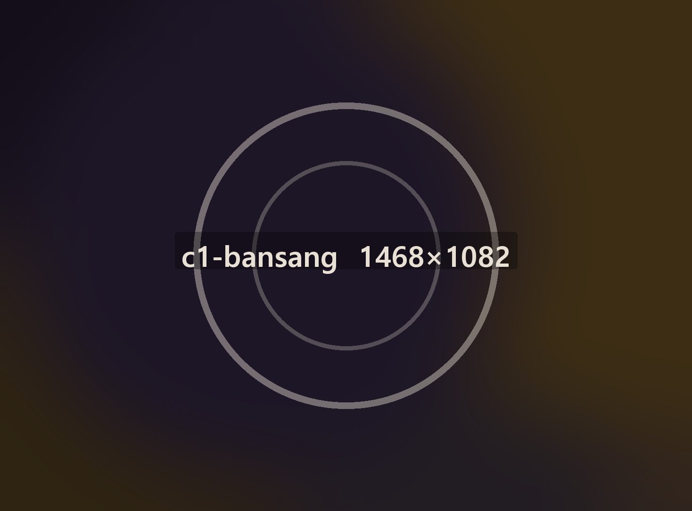
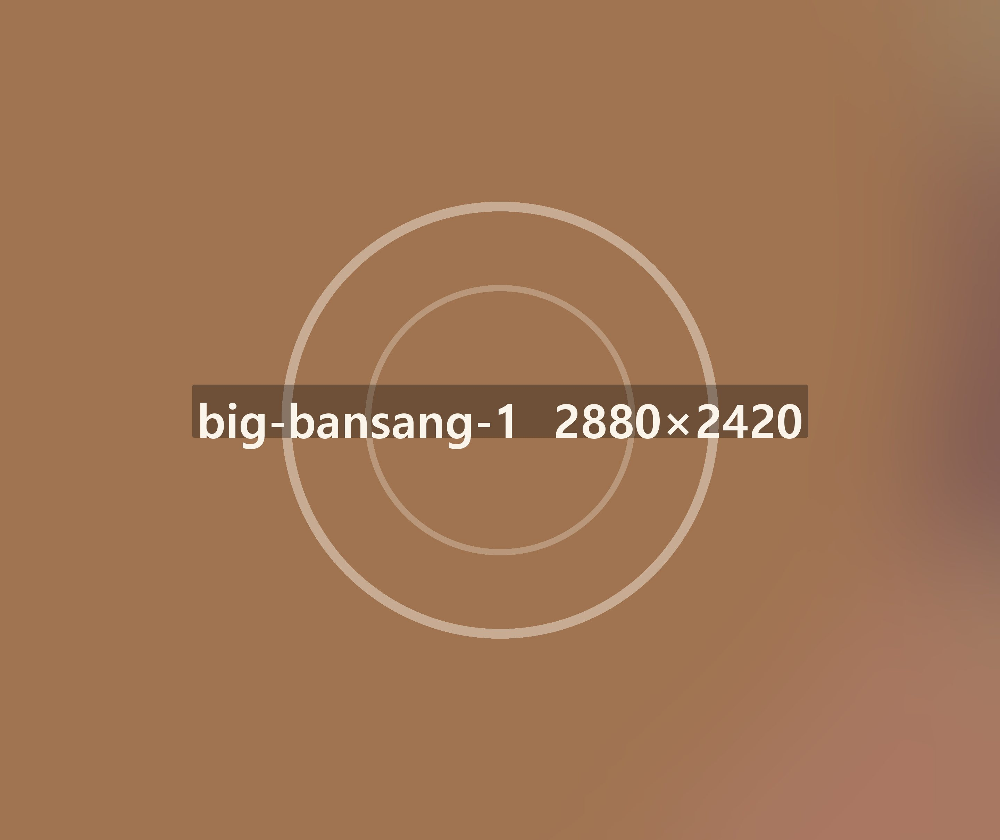
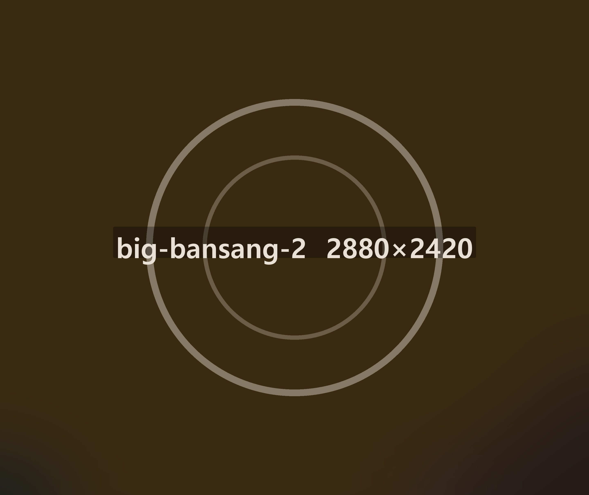
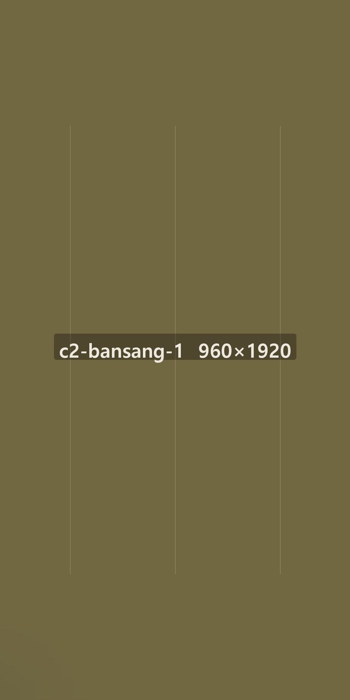
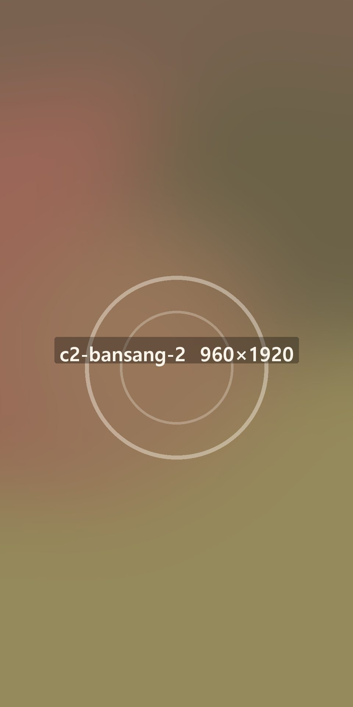
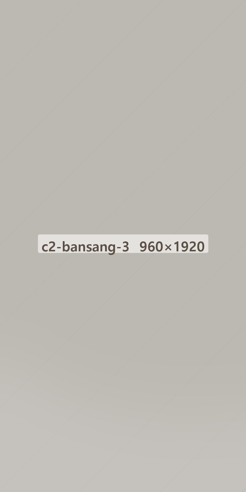

한식 반상 · 2021년 시작 · 전국 140곳


상이 한 번에
나갑니다
반찬을 먼저 깔고 밥과 국을 마지막에 올립니다. 앉으면 3분 안에 상이 찹니다.

반찬은 일곱 가지,
매일 바뀝니다
나물 셋, 조림 둘, 김치 둘로 그날 들어온 재료에 맞춰 짭니다.

한 상에
7찬나물 셋, 조림 둘, 김치 둘.

앉고 나서
3분반찬을 먼저 깔아 두고 밥을 올립니다.

그날 아침
겉절이배추는 그날 들어온 것만 씁니다.
상에 오르는 것
- 나물 셋시금치·콩나물·고사리를 기본으로 둡니다.
- 조림 둘메추리알과 연근조림이 자주 오릅니다.
- 김치 둘겉절이와 묵은지를 같이 냅니다.
- 국은 두 가지된장국과 미역국 중에 고르실 수 있습니다.
혼자 와도 한 상
- 1인 반상혼자 오셔도 일곱 찬 그대로 냅니다.
- 리필나물과 김치는 더 달라고 하셔도 됩니다.
- 포장반찬은 칸 나눈 용기에 담습니다.
- 예약4인 이상은 전화로 미리 말씀해 주세요.